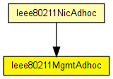
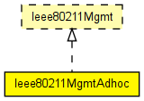

802.11 management module used for ad-hoc mode. Relies on the MAC layer (Ieee80211Mac) for reception and transmission of frames.
This implementation never sends control or management frames, and discards any such frame received. Distributed beacon generation is not modelled. Only data frames are understood or sent at any time.
This module never switches channels, that is, it will operate on the channel the physical layer is configured for (see channelNumber in Ieee80211Radio).
Author: Andras Varga
The following diagram shows usage relationships between types. Unresolved types are missing from the diagram. Click here to see the full picture.
The following diagram shows inheritance relationships for this type. Unresolved types are missing from the diagram. Click here to see the full picture.
If a module type shows up more than once, that means it has been defined in more than one NED file.
| Ieee80211NicAdhoc (compound module) |
This NIC implements an 802.11 network interface card in ad-hoc mode. |
| Name | Type | Default value | Description |
|---|---|---|---|
| frameCapacity | int | 100 |
| Name | Value | Description |
|---|---|---|
| display | i=block/cogwheel |
| Name | Direction | Size | Description |
|---|---|---|---|
| uppergateIn | input | ||
| uppergateOut | output | ||
| macIn | input | ||
| macOut | output |
// // 802.11 management module used for ad-hoc mode. // Relies on the MAC layer (Ieee80211Mac) for reception and transmission of frames. // // This implementation never sends control or management frames, and discards // any such frame received. Distributed beacon generation is not modelled. // Only data frames are understood or sent at any time. // // This module never switches channels, that is, it will operate on the channel // the physical layer is configured for (see channelNumber in Ieee80211Radio). // // @author Andras Varga // simple Ieee80211MgmtAdhoc like Ieee80211Mgmt { parameters: int frameCapacity = default(100); @display("i=block/cogwheel"); gates: input uppergateIn; output uppergateOut; input macIn @labels(Ieee80211Frame); output macOut @labels(Ieee80211Frame); }